library(tidyverse)
library(readxl)
library(lubridate)
knitr::opts_chunk$set(echo = TRUE, warning=FALSE, message=FALSE)Final Project
final project
Introduction
The economy is probably the most influential factor in everyone’s daily lives. As a public official in Korea (even though I am not in charge of economic policy), I have experienced how economic problems affect not only our daily lives but also the government.
From this point of view, I chose the US economy as the subject of my final project of DACSS 601. This is because the U.S. economy has a great impact on the global economy due to its size and openness, and I wanted to check the theory and contents of economics that I learned when I was an undergraduate.
I selected several research topics using the ‘federal funds rate’ data used in class.
The first is to look at the general picture of the U.S. economy. I will visualize and examine the real gdp changes in the US economy since the 50s.
Second, I’ll draw the famous Phillips curve, which represents the trade-off between unemployment and inflation, using real data from the United States, and see how the trade-off between the two really looks.
Lastly, I’ll look at whether the target interest rate of the U.S. monetary policy authorities is for inflation management as I learned in the textbook. If the monetary authorities’ top policy goal is inflation management, they will raise the target interest rate when inflation is high to stabilize prices, and the correlation between the two will be high.
Read and Tidy Data
# Read Federal Funds Rate data
fedfundsrate_org<-read_csv("_data/FedFundsRate.csv", show_col_types = FALSE)
fedfundsrate_org# A tibble: 904 × 10
Year Month Day Federal F…¹ Feder…² Feder…³ Effec…⁴ Real …⁵ Unemp…⁶ Infla…⁷
<dbl> <dbl> <dbl> <dbl> <dbl> <dbl> <dbl> <dbl> <dbl> <dbl>
1 1954 7 1 NA NA NA 0.8 4.6 5.8 NA
2 1954 8 1 NA NA NA 1.22 NA 6 NA
3 1954 9 1 NA NA NA 1.06 NA 6.1 NA
4 1954 10 1 NA NA NA 0.85 8 5.7 NA
5 1954 11 1 NA NA NA 0.83 NA 5.3 NA
6 1954 12 1 NA NA NA 1.28 NA 5 NA
7 1955 1 1 NA NA NA 1.39 11.9 4.9 NA
8 1955 2 1 NA NA NA 1.29 NA 4.7 NA
9 1955 3 1 NA NA NA 1.35 NA 4.6 NA
10 1955 4 1 NA NA NA 1.43 6.7 4.7 NA
# … with 894 more rows, and abbreviated variable names
# ¹`Federal Funds Target Rate`, ²`Federal Funds Upper Target`,
# ³`Federal Funds Lower Target`, ⁴`Effective Federal Funds Rate`,
# ⁵`Real GDP (Percent Change)`, ⁶`Unemployment Rate`, ⁷`Inflation Rate`
# ℹ Use `print(n = ...)` to see more rowsThis data includes dates from 1954 (separated by year, month, and day), and various economic variables. There are seven economic variables included, and if the Federal Funds Target Rate, Federal Funds Upper Target, and Federal Funds Lower Target are considered as one variable of the monetary authorities, the actual data included are five economic variables such as target interest rates, effective federal funds rate, real gdp percent change, unemployment rates, and inflation rates.
This data contains a lot, but data from April of 2017 and later are missing. So, I found data after 2017 by variable on several web pages. Then, I read each data, organize the data using the pivot function, etc. if necessary, and had combined them into one using the join function.
# Read Federal Funds Upper Target after 2017
upper_target_after17<-read_csv("_data/ys_additional/DFEDTARU.csv",
col_names = c("Date", "Federal Funds Upper Target"),
show_col_types = FALSE,
skip=1)
# Read Federal Funds Lower Target after 2017
lower_target_after17<-read_csv("_data/ys_additional/DFEDTARL.csv",
col_names = c("Date", "Federal Funds Lower Target"),
show_col_types = FALSE,
skip=1)
# Read Effective Federal Funds Rate after 2017
effr_after17<-read_csv("_data/ys_additional/DFF.csv",
col_names = c("Date", "Effective Federal Funds Rate"),
show_col_types = FALSE,
skip=1)
# Read Unemployment Rate after 2017
unemployment_after17<-read_csv("_data/ys_additional/UNRATE.csv",
col_names = c("Date", "Unemployment Rate"),
show_col_types = FALSE,
skip=1)
# Read Real GDP (Percent Change) after 2017
rgdp_after17<-read_csv("_data/ys_additional/A191RL1Q225SBEA.csv",
col_names = c("Date", "Real GDP (Percent Change)"),
show_col_types = FALSE,
skip=1)
# Read Inflation Rate after 2017
inflation_after17<-read_xlsx("_data/ys_additional/SeriesReport-20220829142931_1adcd3.xlsx",
range="A72:M77",
col_names = c("Year","1", "2", "3", "4", "5", "6", "7", "8", "9", "10", "11", "12"))
# Pivot Inflation Rate data after 2017
inflation_after17<-pivot_longer(inflation_after17,
cols = "1":"12",
names_to = "Month",
values_to = "Inflation Rate")
# Tidy Inflation Rate data after 2017
inflation_after17<-inflation_after17 %>% mutate("Day"=1) %>%
mutate("Date" = make_date(Year, Month, Day)) %>%
select("Date", "Inflation Rate")
# Join all the after 2017 data
data_after2017<-left_join(upper_target_after17, lower_target_after17, key = 'Date') %>%
left_join(effr_after17, key = 'Date') %>%
left_join(rgdp_after17, key = 'Date') %>%
left_join(unemployment_after17, key = 'Date') %>%
left_join(inflation_after17, key = 'Date')
data_after2017# A tibble: 1,978 × 7
Date Federal Funds Upper Targ…¹ Feder…² Effec…³ Real …⁴ Unemp…⁵ Infla…⁶
<date> <dbl> <dbl> <dbl> <dbl> <dbl> <dbl>
1 2017-04-01 1 0.75 0.82 2.3 4.4 1.9
2 2017-04-02 1 0.75 0.82 NA NA NA
3 2017-04-03 1 0.75 0.91 NA NA NA
4 2017-04-04 1 0.75 0.91 NA NA NA
5 2017-04-05 1 0.75 0.91 NA NA NA
6 2017-04-06 1 0.75 0.91 NA NA NA
7 2017-04-07 1 0.75 0.91 NA NA NA
8 2017-04-08 1 0.75 0.91 NA NA NA
9 2017-04-09 1 0.75 0.91 NA NA NA
10 2017-04-10 1 0.75 0.91 NA NA NA
# … with 1,968 more rows, and abbreviated variable names
# ¹`Federal Funds Upper Target`, ²`Federal Funds Lower Target`,
# ³`Effective Federal Funds Rate`, ⁴`Real GDP (Percent Change)`,
# ⁵`Unemployment Rate`, ⁶`Inflation Rate`
# ℹ Use `print(n = ...)` to see more rowsNow, I organized the date variables of the existing data to combine the existing data with the new data.
# Tidy the original data to join data after 2017
fedfundsrate_org<-fedfundsrate_org%>%
mutate(Date = make_date(Year, Month, Day))
tot_fedfundsrate<-full_join(fedfundsrate_org, data_after2017, key= "Date")
tot_fedfundsrate<-tot_fedfundsrate%>%
select(!"Year")%>%
select(!"Month")%>%
select(!"Day")%>%
relocate(c("Date"))
tot_fedfundsrate# A tibble: 2,882 × 8
Date Federal Funds Ta…¹ Feder…² Feder…³ Effec…⁴ Real …⁵ Unemp…⁶ Infla…⁷
<date> <dbl> <dbl> <dbl> <dbl> <dbl> <dbl> <dbl>
1 1954-07-01 NA NA NA 0.8 4.6 5.8 NA
2 1954-08-01 NA NA NA 1.22 NA 6 NA
3 1954-09-01 NA NA NA 1.06 NA 6.1 NA
4 1954-10-01 NA NA NA 0.85 8 5.7 NA
5 1954-11-01 NA NA NA 0.83 NA 5.3 NA
6 1954-12-01 NA NA NA 1.28 NA 5 NA
7 1955-01-01 NA NA NA 1.39 11.9 4.9 NA
8 1955-02-01 NA NA NA 1.29 NA 4.7 NA
9 1955-03-01 NA NA NA 1.35 NA 4.6 NA
10 1955-04-01 NA NA NA 1.43 6.7 4.7 NA
# … with 2,872 more rows, and abbreviated variable names
# ¹`Federal Funds Target Rate`, ²`Federal Funds Upper Target`,
# ³`Federal Funds Lower Target`, ⁴`Effective Federal Funds Rate`,
# ⁵`Real GDP (Percent Change)`, ⁶`Unemployment Rate`, ⁷`Inflation Rate`
# ℹ Use `print(n = ...)` to see more rowsAll put together, it became a data table with 2882 rows and 8 columns. It felt too much. In order to facilitate analysis, I extracted data from January, April, July, and October using the filter function and made quarterly data.
# Filter quarterly data and rename columns
fin_ffr<-tot_fedfundsrate %>%
filter(month(Date) %in% c(1, 4, 7, 10)) %>%
filter(day(Date) == 1)
names(fin_ffr) <- c("date", "fftr", "ffut", "fflt", "effr", "rgdp", "ur", "ir")
fin_ffr# A tibble: 273 × 8
date fftr ffut fflt effr rgdp ur ir
<date> <dbl> <dbl> <dbl> <dbl> <dbl> <dbl> <dbl>
1 1954-07-01 NA NA NA 0.8 4.6 5.8 NA
2 1954-10-01 NA NA NA 0.85 8 5.7 NA
3 1955-01-01 NA NA NA 1.39 11.9 4.9 NA
4 1955-04-01 NA NA NA 1.43 6.7 4.7 NA
5 1955-07-01 NA NA NA 1.68 5.5 4 NA
6 1955-10-01 NA NA NA 2.24 2.4 4.3 NA
7 1956-01-01 NA NA NA 2.45 -1.5 4 NA
8 1956-04-01 NA NA NA 2.62 3.4 4 NA
9 1956-07-01 NA NA NA 2.75 -0.3 4.4 NA
10 1956-10-01 NA NA NA 2.96 6.7 3.9 NA
# … with 263 more rows
# ℹ Use `print(n = ...)` to see more rowsNow, I finally created a dataset from the third quarter of 1954 to the third quarter of 2022 with 273 rows.
Visualization and Analysis
Regarding the first topic, I drew a time series line graph of change in the US real GDP since 1954.
# Time series of Real GDP of the US
ggplot(fin_ffr) +
geom_line(aes(x=date, y=rgdp)) +
stat_smooth(aes(x=date, y=rgdp)) +
ggtitle("Real GDP Change of the US")+
xlab("Time") + ylab("Real GDP Change(Percent)")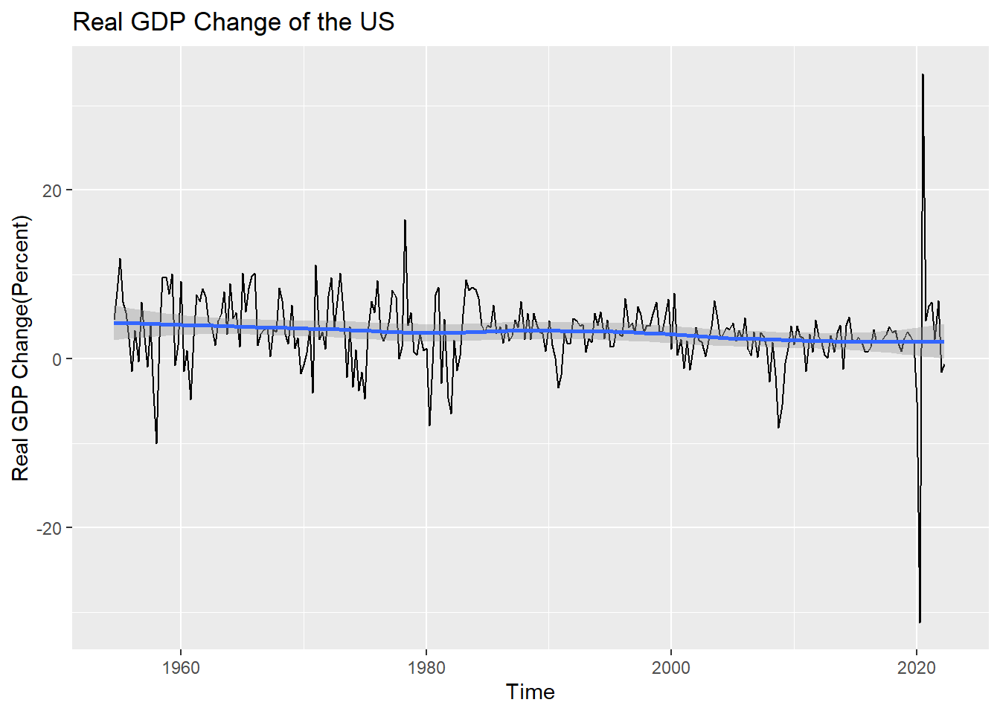
mean(fin_ffr$rgdp, na.rm=T)[1] 3.08155During this period, the average real GDP growth rate in the United States was 3.08 percent.(Missing growth rates for the period were excluded from the calculation)
And the growth rate seems to be decreasing very little by little, but it is not seen well due to rapid changes since 2020. I drew the graph again except for rapid changes after 2020, which seems to be due to the COVID-19 pandemic.
# Exclude COVID period(2020-)
ffr_b20<-filter(fin_ffr, year(date)<=2019)
ffr_b20# A tibble: 262 × 8
date fftr ffut fflt effr rgdp ur ir
<date> <dbl> <dbl> <dbl> <dbl> <dbl> <dbl> <dbl>
1 1954-07-01 NA NA NA 0.8 4.6 5.8 NA
2 1954-10-01 NA NA NA 0.85 8 5.7 NA
3 1955-01-01 NA NA NA 1.39 11.9 4.9 NA
4 1955-04-01 NA NA NA 1.43 6.7 4.7 NA
5 1955-07-01 NA NA NA 1.68 5.5 4 NA
6 1955-10-01 NA NA NA 2.24 2.4 4.3 NA
7 1956-01-01 NA NA NA 2.45 -1.5 4 NA
8 1956-04-01 NA NA NA 2.62 3.4 4 NA
9 1956-07-01 NA NA NA 2.75 -0.3 4.4 NA
10 1956-10-01 NA NA NA 2.96 6.7 3.9 NA
# … with 252 more rows
# ℹ Use `print(n = ...)` to see more rowsggplot(ffr_b20) +
geom_line(aes(x=date, y=rgdp)) +
stat_smooth(aes(x=date, y=rgdp)) +
ggtitle("Real GDP Change of the US(Before the COVID)")+
xlab("Time") + ylab("Real GDP Change(Percent)")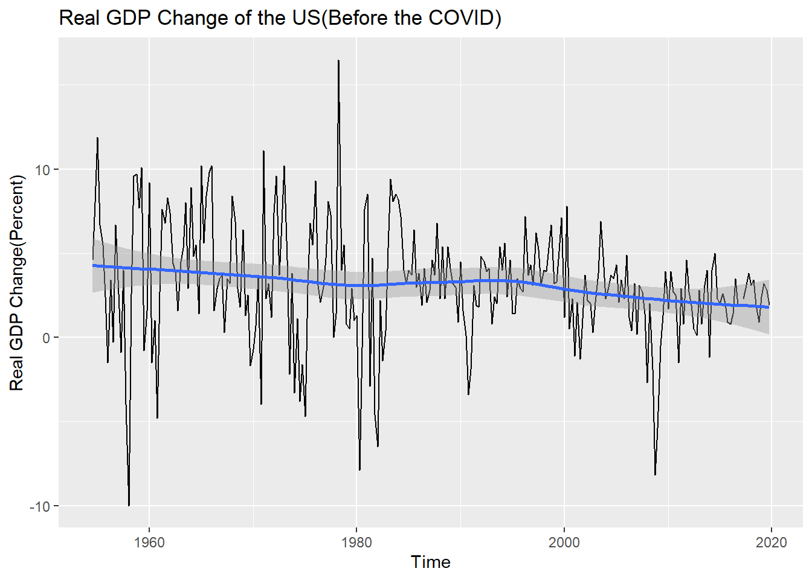
Now the blue trend line is small, but it certainly seems to be lowering. In addition, I can see the economic recession caused by the oil shock in the late 70s and early 80s and the economic recession caused by the financial crisis in the late 2000s.
Next, I looked at the Phillips curve.
After a single linear analysis of the correlation between the unemployment rate and the inflation rate since 1954, the trend line was drawn together on the scatter plot using this result.
# An Analysis of the Correlation Between Unemployment and Inflation Rate
cor.test(fin_ffr$ir, fin_ffr$ur)
Pearson's product-moment correlation
data: fin_ffr$ir and fin_ffr$ur
t = 2.8275, df = 257, p-value = 0.005061
alternative hypothesis: true correlation is not equal to 0
95 percent confidence interval:
0.05292381 0.28945269
sample estimates:
cor
0.173692 lm(ir~ur, fin_ffr)
Call:
lm(formula = ir ~ ur, data = fin_ffr)
Coefficients:
(Intercept) ur
2.1054 0.2583 The result is strange. The Pearson correlation coefficient was not high at 0.17, and the relationship between the unemployment rate and the inflation rate was rather positive, unlike the theory!
The scatter plot and trend line were drawn using the ggplot function.
# Phillips Curve of the US(1954-)
ggplot(fin_ffr, mapping = aes(x=ur, y=ir)) +
geom_point() +
geom_abline(slope=0.2583, intercept=2.1054,
color = 'darkorange') +
labs(title = "Phillips Curve of the US",
x="Unemployment Rate",
y="Inflation Rate")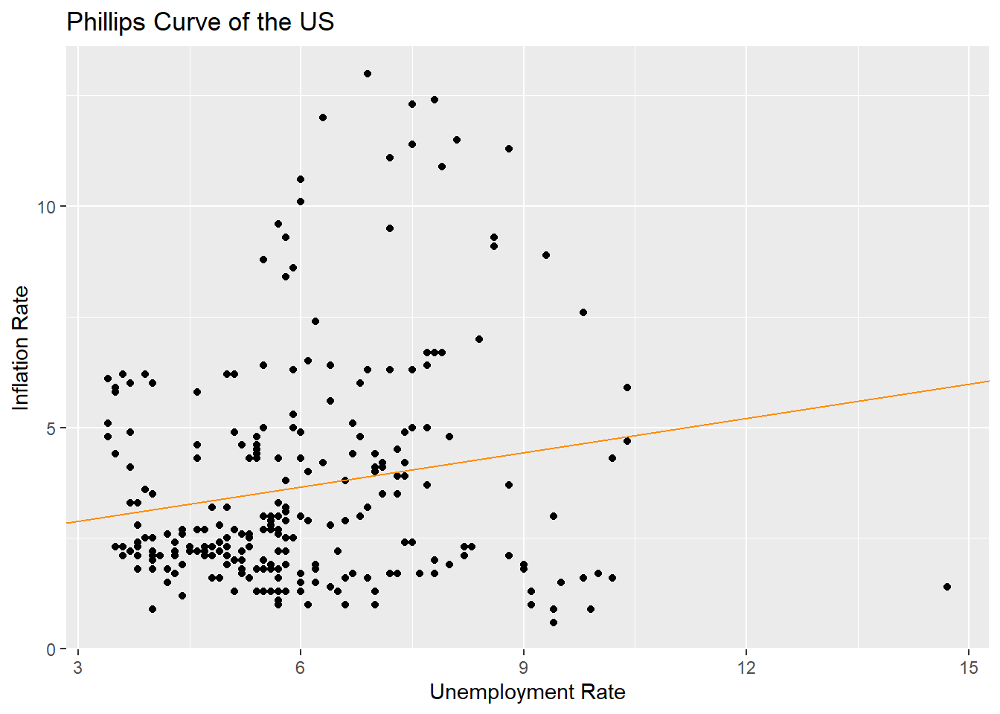
To take a closer look, I divided the period from the oil shock in the early 80s and the financial crisis in the late 00s. To be exact, it was divided into three periods: 1954 to 1979, 1980 to 2008, and 2009 and later.
# Mutate New Column by Decade
fin_ffr <- fin_ffr %>% mutate("decade" = ifelse(year(date)<=1979, "1950s to 1970s",
ifelse(year(date)<=2008, "1980s to 2000s", "2010s")))
# Draw Phillips Curve of the US by Decade
ggplot(fin_ffr, mapping = aes(x=ur, y=ir)) +
geom_point(mapping = aes(color = decade)) +
ggtitle("Phillips Curve of the US(disticted by period)")+
xlab("Unemployment Rate") + ylab("Inflation Rate")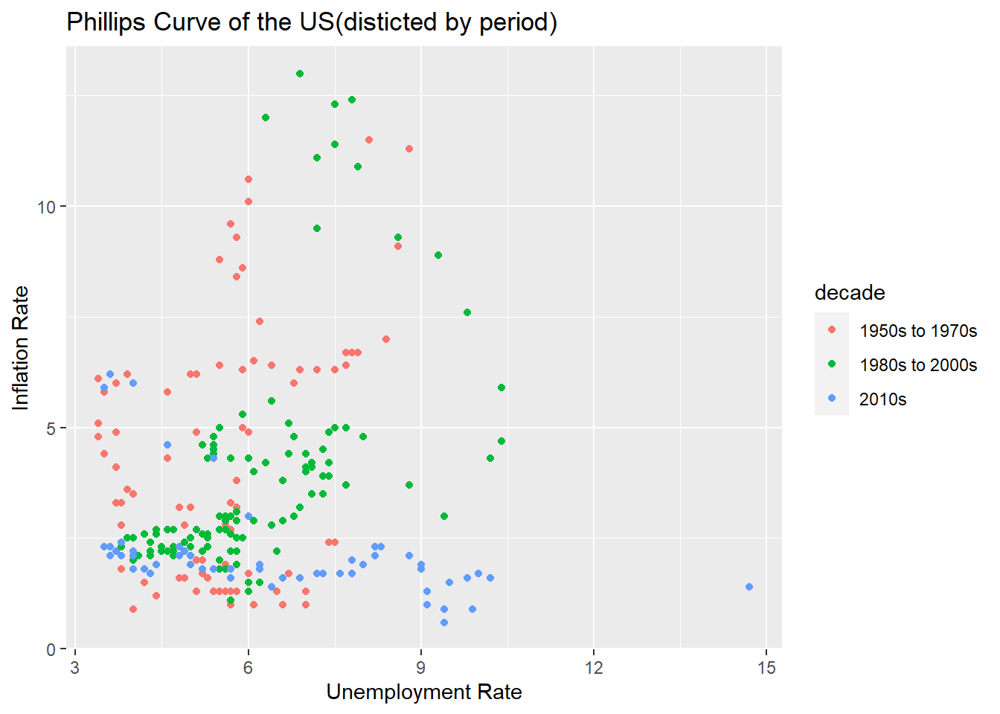
It seems that the Phillips curve, which is slightly familiar by period, is seen. Now, let’s take a closer look at each period.
# Seperate the Data
ffr_1 <- filter(fin_ffr, decade=="1950s to 1970s")
ffr_2 <- filter(fin_ffr, decade=="1980s to 2000s")
ffr_3 <- filter(fin_ffr, decade=="2010s")
# Phillips Curve of Before 80s
cor.test(ffr_1$ur, ffr_1$ir)
Pearson's product-moment correlation
data: ffr_1$ur and ffr_1$ir
t = 3.1181, df = 86, p-value = 0.002476
alternative hypothesis: true correlation is not equal to 0
95 percent confidence interval:
0.1170705 0.4950937
sample estimates:
cor
0.3186984 lm(ir~ur,ffr_1)
Call:
lm(formula = ir ~ ur, data = ffr_1)
Coefficients:
(Intercept) ur
0.4649 0.6773 ggplot(ffr_1, mapping = aes(x=ur, y=ir)) +
geom_point() +
geom_abline(slope=0.6773, intercept=0.4649,
color = "pink") +
ggtitle("Phillips Curve of the US(1954-1979)")+
xlab("Unemployment Rate") + ylab("Inflation Rate")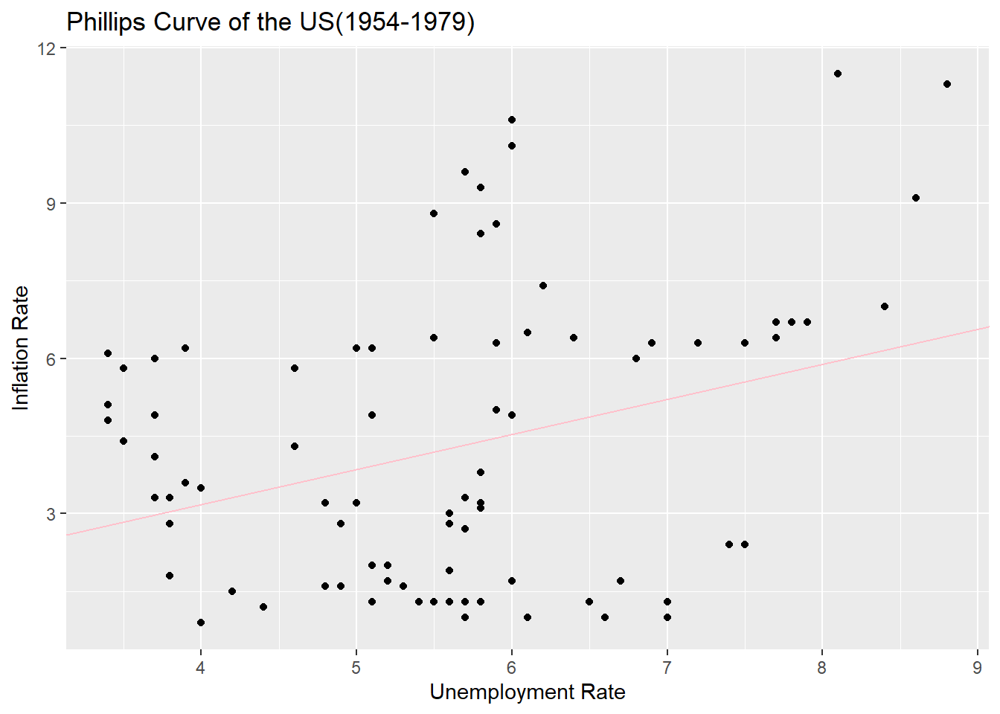
In the same way, the relationship between inflation and unemployment before the 1980s is drawn as a trend line and a spread. It’s weird. It’s a positive relationship again.
Let’s move on from 1980 to 2008.
# Phillips Curve of 1980-2010
cor.test(ffr_2$ur, ffr_2$ir)
Pearson's product-moment correlation
data: ffr_2$ur and ffr_2$ir
t = 6.6175, df = 114, p-value = 1.243e-09
alternative hypothesis: true correlation is not equal to 0
95 percent confidence interval:
0.3810965 0.6469862
sample estimates:
cor
0.5268102 lm(ir~ur, ffr_2)
Call:
lm(formula = ir ~ ur, data = ffr_2)
Coefficients:
(Intercept) ur
-1.6648 0.9188 ggplot(ffr_2, mapping = aes(x=ur, y=ir)) +
geom_point() +
geom_abline(slope=0.9188, intercept=-1.6648,
color = "green") +
ggtitle("Phillips Curve of the US(1980-2008)")+
xlab("Unemployment Rate") + ylab("Inflation Rate")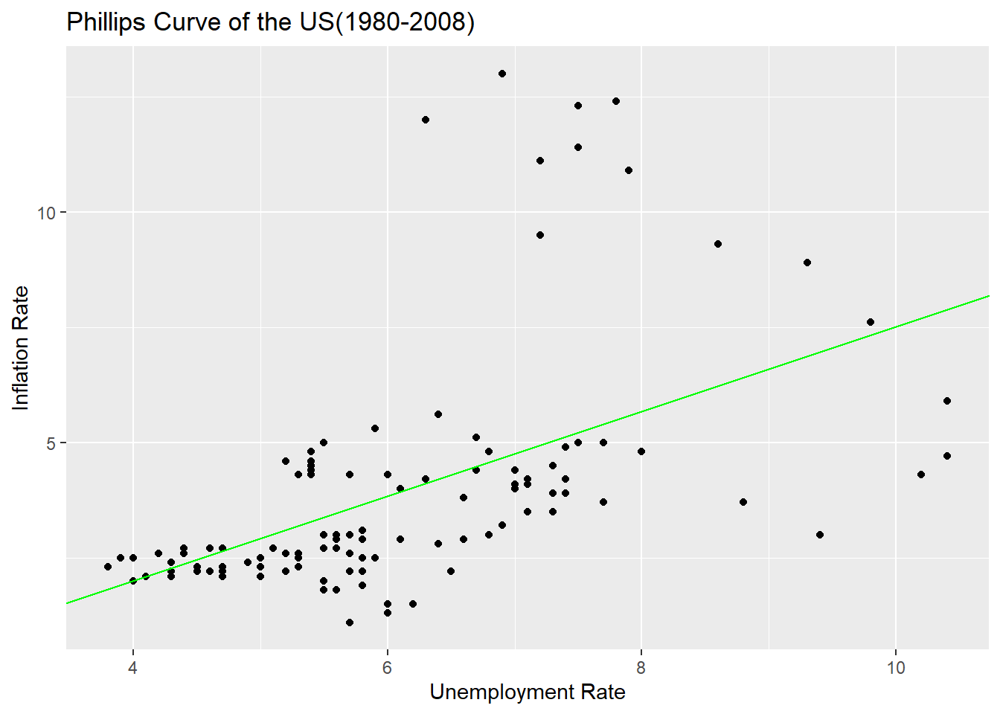
It’s also a positive relationship. The correlation coefficient was rather higher.
Next on, let’s look at the data since 2009.
# Phillips Curve of 2010s
cor.test(ffr_3$ur, ffr_3$ir)
Pearson's product-moment correlation
data: ffr_3$ur and ffr_3$ir
t = -3.9436, df = 53, p-value = 0.0002371
alternative hypothesis: true correlation is not equal to 0
95 percent confidence interval:
-0.6584062 -0.2415305
sample estimates:
cor
-0.4763071 lm(ir~ur, ffr_3)
Call:
lm(formula = ir ~ ur, data = ffr_3)
Coefficients:
(Intercept) ur
3.5990 -0.2226 ggplot(ffr_3, mapping = aes(x=ur, y=ir)) +
geom_point() +
geom_abline(slope=-0.2226, intercept=3.5990,
color = "blue") +
ggtitle("Phillips Curve of the US(2009-)")+
xlab("Unemployment Rate") + ylab("Inflation Rate")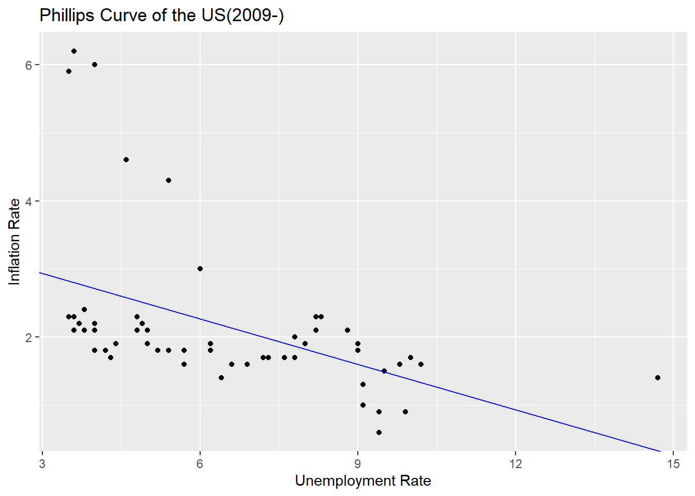
Finally, we have the same Phillips curve as we talk about in theory. Looking at the scatter plot and trend line after 2009, there is a negative correlation between the unemployment rate and the inflation rate.
Taking the Phillips curve together, the relationship between the unemployment rate and the inflation rate does not show a negative correlation in the long run as we talk about in theory. In the long run, as the monetary theorist argues, money does not seem to affect real economic variables other than nominal variables. However, in the short term, the trade-off between the unemployment rate and the inflation rate may actually appear.
Now, let’s look at the final topic, the policy goals of monetary authorities.
Monetary authorities set target interest rates to intervene in the market, and I will first look at how target interest rates have affected market interest rates(here, The effective federal funds rate). A line graph was drawn using data since 1983 when the target interest rate began to be set.
# Draw the line graph of target rate and effective federal funds rate
ggplot(fin_ffr, (aes(x=date))) +
geom_line(aes(y=effr), color = 'red') +
geom_line(aes(y=fftr), color = 'blue') +
geom_line(aes(y=ffut), color = 'dark blue') +
geom_line(aes(y=fflt), color = 'sky blue') +
scale_x_date(limits=c(as.Date("1982-10-01"),as.Date("2022-07-01"))) +
labs(title = "Target Rate and Effective Federal Funds Rate",
x="Time",
y="Rate") +
coord_cartesian(ylim=c(0, 12))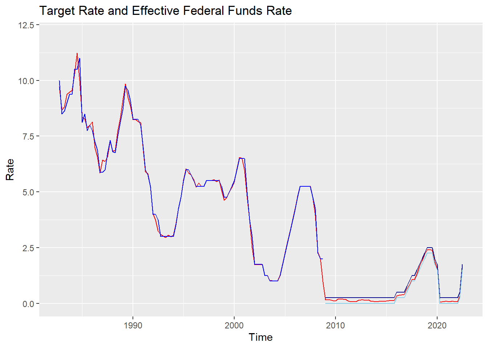
The red line is the effective federal funds rate, and the blue line is the monetary authority’s target interest rate.(Since 2008, when the upper and lower limits were set, dark blue means upper limit, and bright blue means lower limit)
As shown in the figure, the target interest rate and the effective federal funds rate are almost identical. Therefore, for ease of analysis, I will consider the policy intention of the monetary authorities as the effective federal funds rate.
So my concern would be how much the effective federal funds rate and the inflation rate move together. If the policy authorities value the inflation rate, as a policy tool, the effective federal funds rate and the inflation rate will show a high correlation. First, I analyzed the correlation between the two variables.
# An Analysis of the Correlation Between Inflation Rate and The Effective Federal Funds Rate
cor.test(fin_ffr$ir, fin_ffr$effr)
Pearson's product-moment correlation
data: fin_ffr$ir and fin_ffr$effr
t = 19.042, df = 257, p-value < 2.2e-16
alternative hypothesis: true correlation is not equal to 0
95 percent confidence interval:
0.7092358 0.8112382
sample estimates:
cor
0.7649925 lm(effr~ir, fin_ffr)
Call:
lm(formula = effr ~ ir, data = fin_ffr)
Coefficients:
(Intercept) ir
0.5872 1.1331 Pearson’s correlation coefficient was found to be quite high at 0.765. Along with the derived trend line, I also drew the distribution.
# Draw the line graph of effective federal funds rate and inflation rate
ggplot(fin_ffr) +
geom_point(aes(x=ir, y=effr)) +
geom_abline(slope=1.1331, intercept=0.5872,
color = 'darkred') +
labs(title = "Effective Federal Funds Rate and Inflation Rate",
x="Inflation Rate",
y="Effective Federal Funds Rate")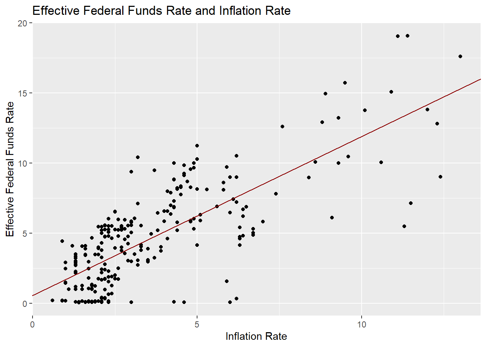
In the same way as looking at the Phillips curve, it was analyzed by dividing it into three periods before the 1980s, before 2008, and after 2008.
# Effective Federal Funds Rate and Inflation Rate Before 80s
cor.test(ffr_1$ir, ffr_1$effr)
Pearson's product-moment correlation
data: ffr_1$ir and ffr_1$effr
t = 10.237, df = 86, p-value < 2.2e-16
alternative hypothesis: true correlation is not equal to 0
95 percent confidence interval:
0.6293731 0.8228414
sample estimates:
cor
0.7411226 lm(effr~ir,ffr_1)
Call:
lm(formula = effr ~ ir, data = ffr_1)
Coefficients:
(Intercept) ir
2.2459 0.7208 ggplot(ffr_1, mapping = aes(x=ir, y=effr)) +
geom_point() +
geom_abline(slope=0.7208, intercept=2.2459,
color = "pink") +
labs(title="Effective Federal Funds Rate and Inflation Rate(1954-1979)",
x="Inflation Rate",
y="Effective Federal Funds Rate")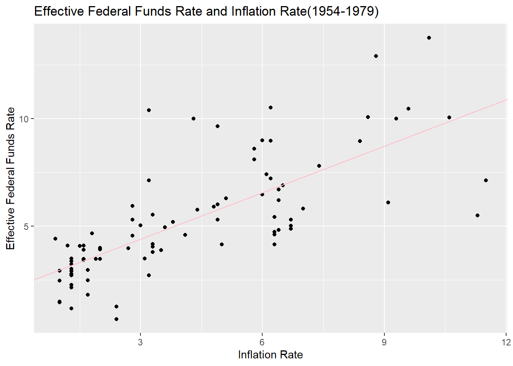
# Effective Federal Funds Rate and Inflation Rate Between 1980 and 2008
cor.test(ffr_2$ir, ffr_2$effr)
Pearson's product-moment correlation
data: ffr_2$ir and ffr_2$effr
t = 17.863, df = 114, p-value < 2.2e-16
alternative hypothesis: true correlation is not equal to 0
95 percent confidence interval:
0.8014692 0.8998561
sample estimates:
cor
0.8583611 lm(effr~ir,ffr_2)
Call:
lm(formula = effr ~ ir, data = ffr_2)
Coefficients:
(Intercept) ir
1.232 1.288 ggplot(ffr_2, mapping = aes(x=ir, y=effr)) +
geom_point() +
geom_abline(slope=1.288, intercept=1.232,
color = "green") +
labs(title="Effective Federal Funds Rate and Inflation Rate(1980-2008)",
x="Inflation Rate",
y="Effective Federal Funds Rate")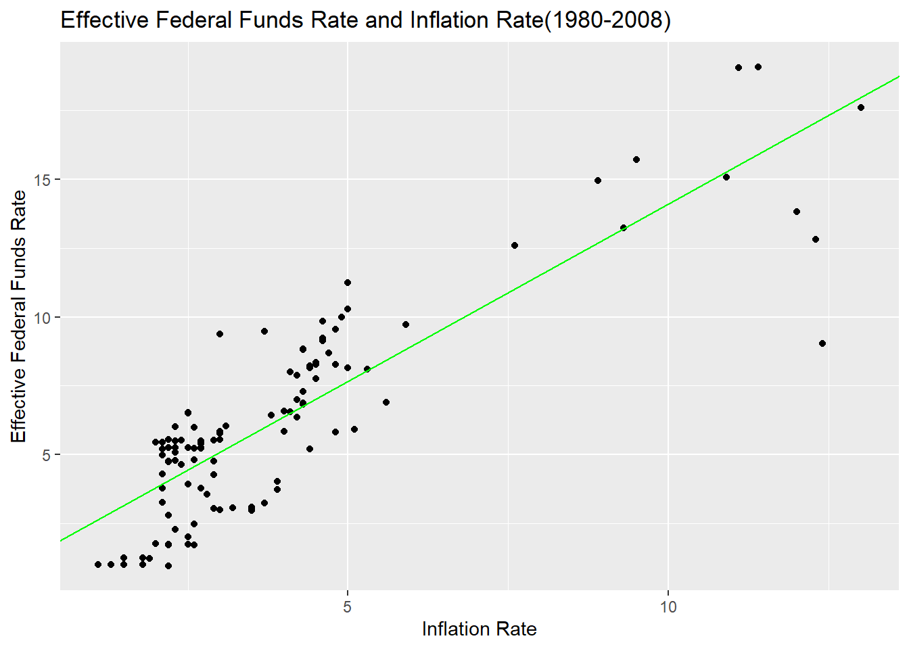
# Effective Federal Funds Rate and Inflation Rate After 2009
cor.test(ffr_3$ir, ffr_3$effr)
Pearson's product-moment correlation
data: ffr_3$ir and ffr_3$effr
t = 0.85548, df = 53, p-value = 0.3961
alternative hypothesis: true correlation is not equal to 0
95 percent confidence interval:
-0.1533385 0.3705312
sample estimates:
cor
0.1167063 lm(effr~ir,ffr_3)
Call:
lm(formula = effr ~ ir, data = ffr_3)
Coefficients:
(Intercept) ir
0.36508 0.07397 ggplot(ffr_3, mapping = aes(x=ir, y=effr)) +
geom_point() +
geom_abline(slope=0.07397, intercept=0.36508,
color = "blue") +
labs(title="Effective Federal Funds Rate and Inflation Rate(2009-)",
x="Inflation Rate",
y="Effective Federal Funds Rate")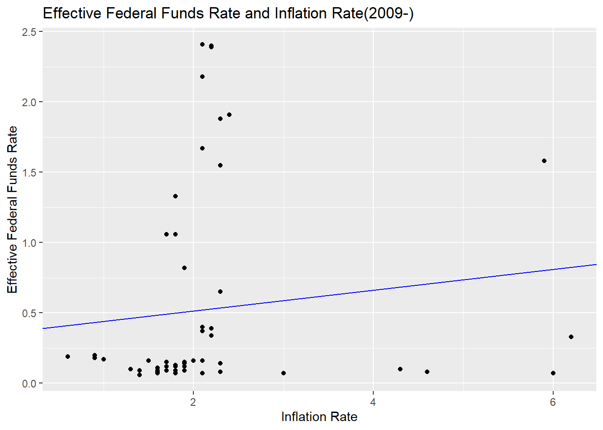
Even when divided by period, the correlation between the two was quite high. However, after 2009, the results were rather lower, which may have been attributed to the fact that the inflation rate was stable at a lower level than before during the period and that the policy environment changed significantly due to COVID-19.
Overall, the monetary authorities’ policy goals reflect the inflation rate well, and it can be seen that inflation rate management is their main policy goal.
Reflection
I summarized the shortcomings and improvements I felt while conducting this task.
First, these are matters related to data analysis itself. As an undergraduate, I have dealt with statistical programs such as SPSS, but it is too long ago and never in the case of programming languages such as R. Therefore, the whole process was harder and took longer than I thought. In the future, I will have to get used to coding and continue to improve while attending the DACSS course. Specifically, as it is related to missing values, missing values were not confirmed in the data merger process. It was discovered later while conducting the analysis, but this is the first task and believes in the possibility of future improvement, and the analysis was conducted without missing values. In addition, detailed analysis was conducted separately from each data set, and it is believed that coding could have been performed more efficiently using functions such as group_by. In terms of visualization, including graphs, I think it will be possible to decorate more categories in a better way. Considering these points, I will further improve my coding ability. As mentioned in the class, there is no correct answer to R coding, so I will continue to try to find my own way.
Next, reflection and supplementation points were considered in terms of analysis results. Regarding the first research problem, it is thought that more variables related to real GDP growth in the United States can be added to the analysis. Adding population growth rate, capital accumulation rate, and international economic environment related to imports and exports to the analysis, I think the endogenous aspects of U.S. economic development such as technological development can be grasped in more detail. Second, I reached a conclusion that is contrary to our common sense regarding the Phillips curve, and it is thought that the analysis results may be different if the analysis period was divided more accurately using background knowledge on American economic history. I felt that my hypothesis was oversimplified in relation to the third research question. In fact, since monetary authorities determine policies based on past inflation rates, adding time variables to the analysis is considered to be a more precise study.
Conclution
My research question was about historical trends in the U.S. economy, analysis of the Philips curve, and the relationship between the U.S. monetary authorities’ policy objectives and inflation rates.
Now, in relation to the first question, the U.S. economy has seen a real GDP growth rate of about 3% per year, despite several economic crises over the past 70 years.
In relation to the second problem, it was found that the Phillips curve in the United States has been different from the theory described in textbooks for the past 70 years. But, it was also found that a short-term look at the period may show a negative correlation between the unemployment rate and the inflation rate in the textbook.
Finally, the U.S. monetary authorities’ policy goals and inflation rates have historically shown a fairly high correlation. This suggests that the monetary authorities’ policy objectives are closely related to the management of inflation rates.
Bibiliography
Federal Funds Upper and Lower Target, Effective Federal Funds Rate, Real GDP(Percent Change), Unemployment Rate data after April of 2017 from ‘FRED economic data’(https://fred.stlouisfed.org/)
Inflation Rate after April of 2017 from ‘US Bureau of Labor Statistic’(https://www.bls.gov/)